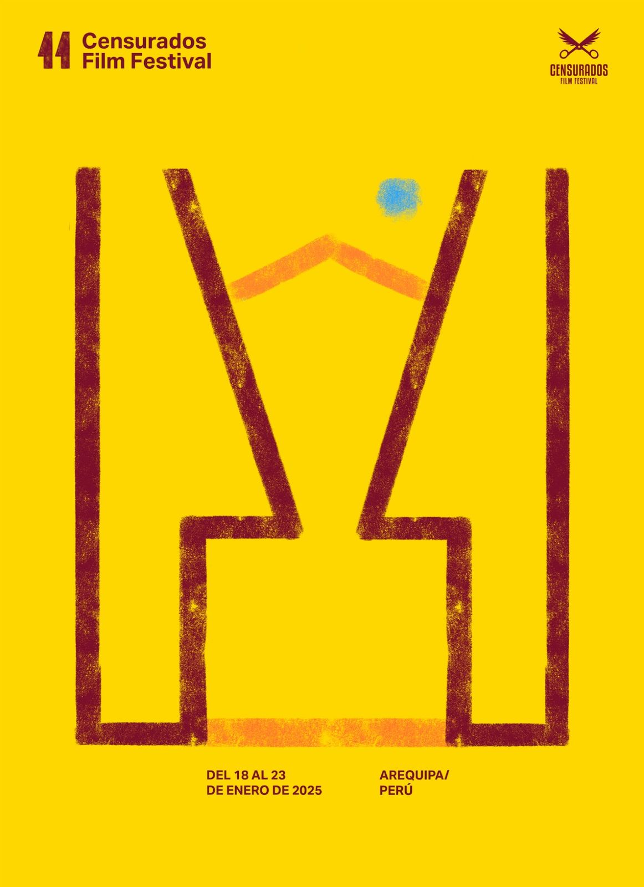

11.ª2025
Arequipa
Del 18 al 24 de enero de 2025 · Plaza San Francisco y Cine Umbral, Arequipa
Inauguración con cine al aire libre en la Plaza San Francisco y el Ballet Folklórico Municipal de Arequipa.
- Película inaugural: Karuara, la gente de río, de Stephanie Boyd y Miguel Araoz Cartagena.
- Tres competencias: Censura, Internacional y Voces Peruanas.
- Premios Tijera a la mejor película censurada, peruana e internacional, y Premio Cachivache.
- II Festivales que Inspiran: 17 festivales de cine y derechos humanos de América Latina.
